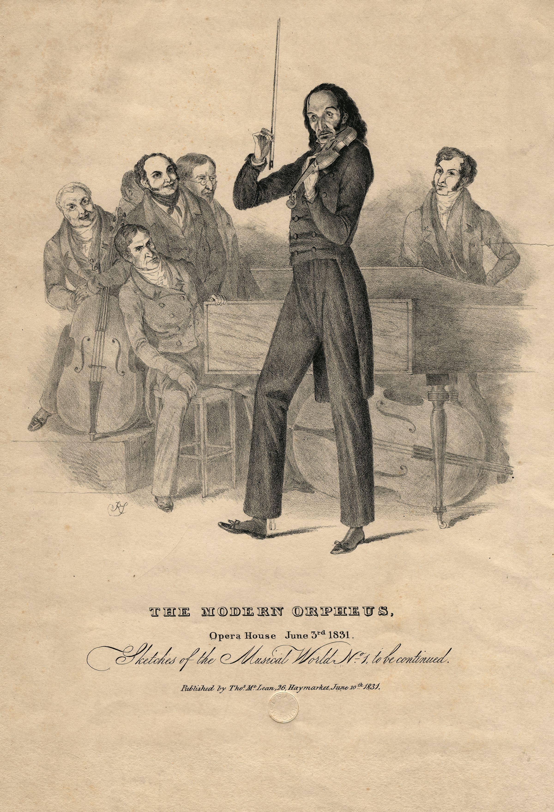
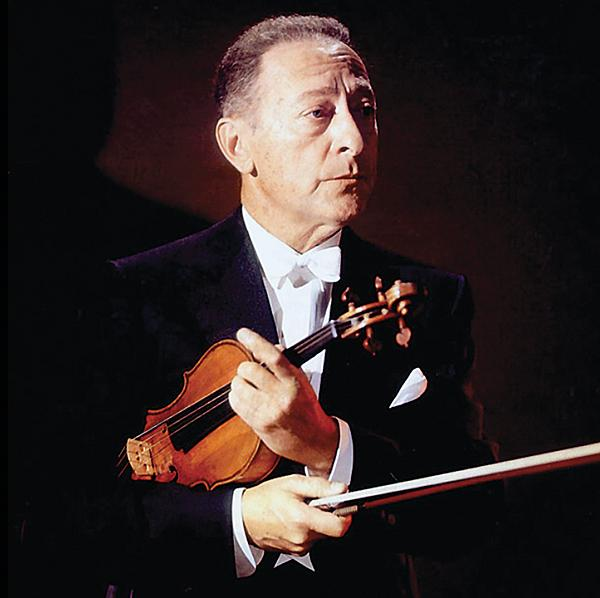
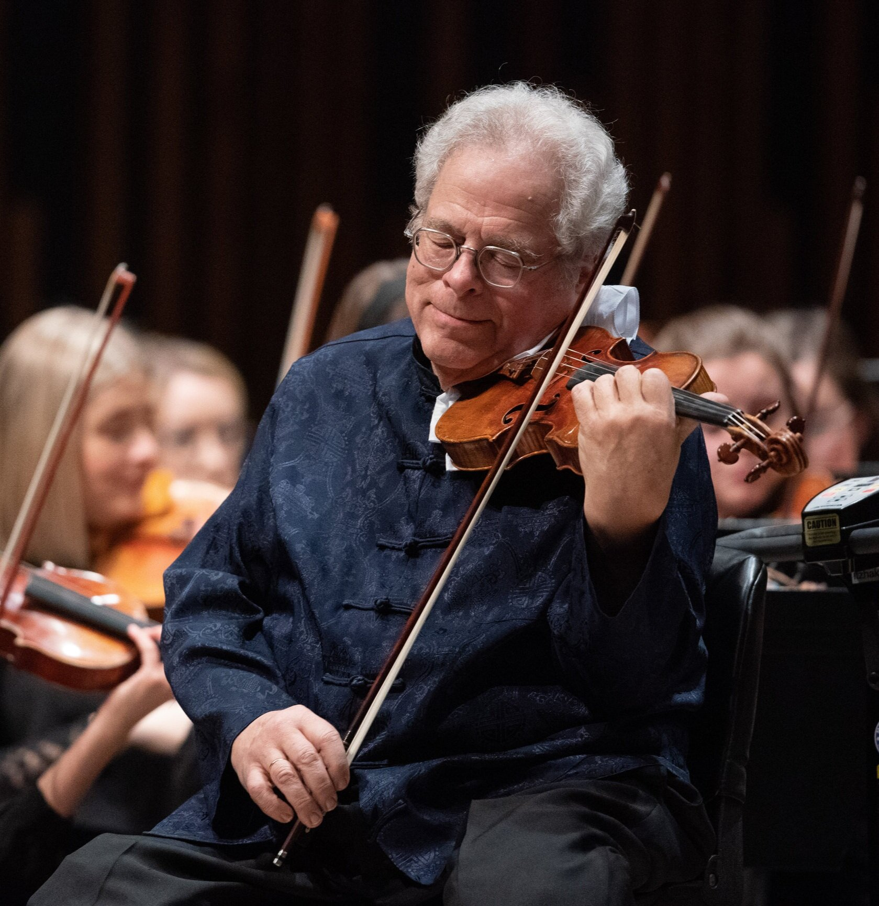
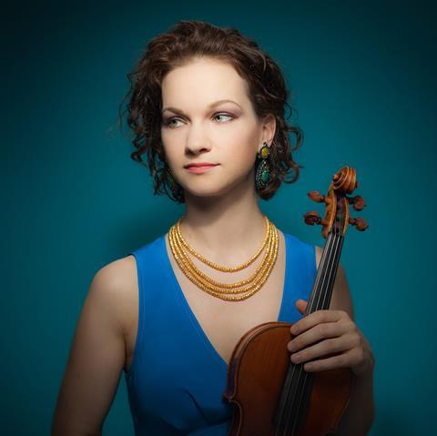
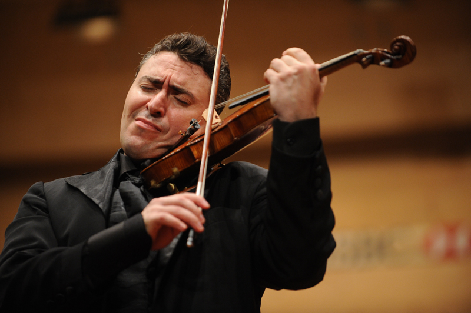
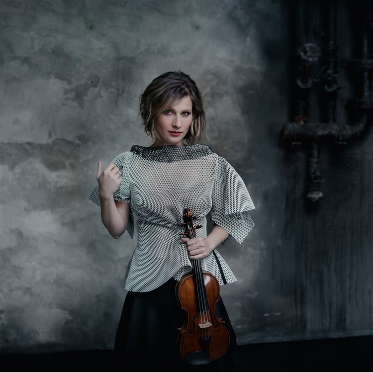

-
Niccolò Paganini
Niccolò (or Nicolò) Paganini (27 October 1782 – 27 May 1840)
was an Italian violinist and composer. He was the most celebrated violin virtuoso of his
time, and
left his mark as one of the pillars of modern violin technique. His 24 Caprices for Solo
Violin Op.
1 are among the best known of his compositions and have served as an inspiration for
many prominent
composers.
He also named as "Devil of the Violin" because of his insane virtuosity.

Niccolò Paganini🎻
|
-
Jascha Heifetz
Jascha Heifetz (January 20 1901 – December 10, 1987) was a
Jewish-Russian-American violinist, widely regarded as one of the greatest violinists of
all time.
Born in Vilnius, he was soon recognized as a child prodigy and was trained in the
Russian classical
violin style in St. Petersburg. Accompanying his parents to escape the violence of the
Russian
Revolution, he moved to the United States as a teenager, where his Carnegie Hall debut
was
rapturously received. Fritz Kreisler, another leading violinist of the twentieth
century, said after
hearing Heifetz's debut, "We might as well take our fiddles and break them across our
knees.

Jascha Heifetz🎻
|
-
Itzhak Perlman
Perlman was born in 1945 in Tel Aviv. His parents, Chaim and Shoshana Perlman, were
Jewish natives of Poland and had independently emigrated to Mandatory Palestine in the
mid-1930s before they met and later married. Perlman contracted polio at age four and
has walked using leg braces and crutches since then and plays the violin while
seated. As of 2018, he uses crutches or an electric scooter for mobility.
When Perlman was three years old, he sat and listened attentively to a violin recital on
the radio, which inspired him to become a violinist. His mother soon bought him a toy
violin, and he instantly taught himself to play melodies. His parents tried to enroll
him at the Shulamit Conservatory, but he was denied admission for being too small to
hold a violin.Despite his handicap, he began learning the violin a year later. His
first teacher was a café violinist. At age five, Perlman was admitted to the Academy of
Music in Tel Aviv (now the Buchmann-Mehta School of Music), where he studied for eight
years with Rivka Goldgart, a violin teacher of Russian origin, and gave his first
recital at age ten.He moved to the United States at age 13 to study at the
Juilliard School and Meadowmount School of Music with the violin teacher Ivan
Galamian and his assistant Dorothy DeLay.

Itzhak Perlman🎻
|
|
-
Hilary Hahn
Hilary Hahn (born November 27, 1979) is an American violinist. A three-time Grammy Award
winner,[4] she has performed throughout the world as a soloist with leading orchestras
and conductors, and as a recitalist. She is an avid supporter of contemporary classical
music, and several composers have written works for her, including concerti by Edgar
Meyer and Jennifer Higdon, partitas by Antón García Abril, two serenades for violin and
orchestra by Einojuhani Rautavaara, and a violin and piano sonata by Lera Auerbach.

Hilary Hahn🎻
|
-
Maxim Vengerov
Vengerov was born in Novosibirsk, the only child of Aleksandr and Larisa Borisovna,
oboist and orphanage children's choir director respectively, and is Jewish.He
sang in his mother's choir from the age of three.He began studying the violin at age
five with Galina Turchaninova.Upon meeting him, she asked: "Do you have strength
in these hands?" The five-year-old punched her in the stomach as hard as he could.
He said years later: "Fortunately, she was in a good mood that day, and she accepted me
as a student."
Lessons went badly at first.Turchaninova was very strict.At one point,
Vengerov stubbornly refused to play for her for five straight lessons.She told
his mother that she was dismissing him as a student.His mother began to cry, and
upon seeing that, Vengerov picked up his violin and played 17 assigned pieces from
memory without interruption.Even though he had refused to play at his lessons,
he had been practicing.Turchaninova agreed to continue his lessons, saying: "Very
well. A violinist like Maxim is born only once in a hundred years."

Maxim Vengerov🎻
|
-
Lisa Batiashvili
Batiashvili was born in Tbilisi, the capital of Georgia, to a violinist father and a
pianist mother. She began learning violin with her father from age four. The family left
Georgia in 1991 when she was 12 years old, and settled in Germany.She later
studied at the Hochschule für Musik und Theater Hamburg. Mark Lubotsky, her teacher in
Hamburg, had been a student of David Oistrakh, for whom Shostakovich wrote his violin
concertos.Later, Lisa Batiashvili also studied with Ana Chumachenco.
In 1995, aged 16, she placed 2nd at the International Jean Sibelius Violin Competition
in Helsinki.Batiashvili was one of the first of the BBC Radio 3 New Generation
Artists, from 1999 to 2001. She has collaborated in chamber music and concerto
performances with cellist Alban Gerhardt and pianist Steven Osborne, both BBC New
Generation Artists exactly contemporary with Batiashvili.She has also
worked with a later BBC New Generation Artist, Ashley Wass, in recital.She made her
BBC Proms debut in 2000.

Lisa Batiashvili🎻
|
|